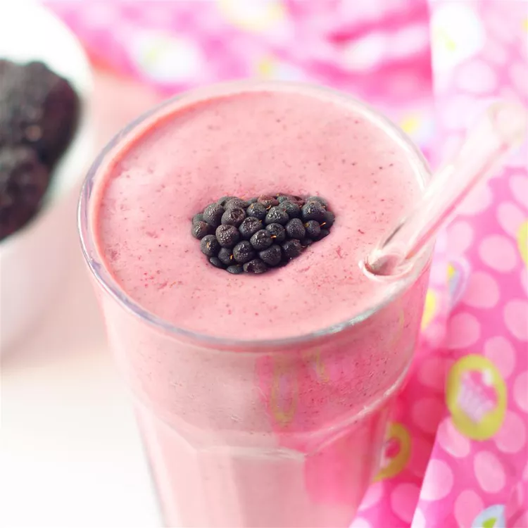

Berry Delicious

Description:
After much experimentation I finally got this smoothie recipe right.
Frozen berries, strawberry yogurt and a whole banana are pureed in blender
for a delicious, drinkable treat.
Ingredients:
- 2 cups frozen mixed berries.
- 1 cup strawberry flavored yogurt.
- 1 banana, sliced.
- 1 cup milk.
- ½ teaspoon white sugar (Optional).
Step(s):
-
In the container of a blender, combine the mixed berries, strawberry
yogurt, banana, milk and sugar. Cover, and blend until smooth. Pour into
glasses and serve.